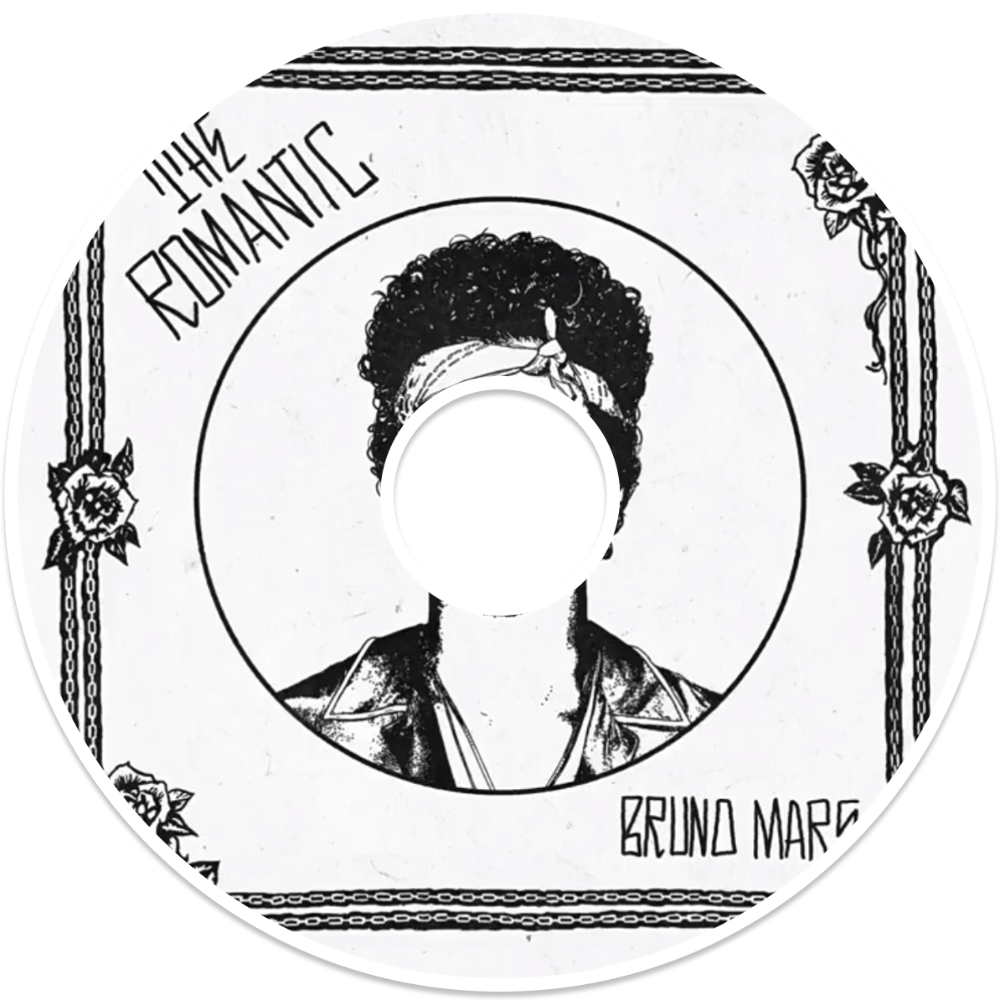

Contact Me
· E-mail : heyiyu1228@126.com
· Phone : 177-5618-1856
Hi，我是何逸妤，目前坐标北京，欢迎你找到我~
做过 AI Agent for出海SaaS产品、百度AI搜索策略产品、和前同事一起做AI教育创业。
待人真诚，喜欢说到做到且尝试新鲜事物。例如负责线下活动宣传策划与执行、担任新加坡FMA音乐奖项评审、和朋友和办过小型音乐节。日常喜欢打网球🎾&羽毛球🏸，偶尔弹吉他🎸。
02 Experience
In the world of finance, mistakes happen—miscalculations, overlooked expenses, inefficiencies that silently erode profitability. Businesses lose money not because they aren’t earning, but because errors go unchecked.
Redo restores confidence in financial numbers.
Born from the need for financial clarity, Redo was founded on a simple yet powerful mission: to correct financial errors and optimize balance sheets. We believe that precision is the key to profitability, and that businesses shouldn’t be held back by avoidable losses. With advanced technology and expert analysis, we uncover discrepancies, eliminate inefficiencies, and restore confidence in the numbers that drive success.
At Redo, we don’t just fix mistakes—we empower businesses to move forward with accuracy and efficiency. Because when the numbers are right, the future looks even brighter.
参与百度搜索 C 端整页首位结果与 AI 阿拉丁卡的垂类百看化工作，负责从需求承接、实验配置、数据分析、策略迭代到上线的完整流程。
作为创业合伙人，负责 K12 AI 教育产品从 0到1 的课程设计、交付与标准化。课程上线鼎校平台（#小程序://鼎校甄选/L7jkKBrpKj9tOLk），销售额已突破5100万 。
负责 VanChat AI 客服产品的产品侧全流程，并开发公司官网，截至 2026.5 仍在被使用（vanchat.io）。
负责北京大数据研究院借贷白名单项目的招标投标，日常跟进虚拟对公卡项目落地，并参与第一届生态伙伴大会撰写副总裁（当时的+2领导）演讲稿。
03 Projects
目前是计算机科学与技术专业研究生，研究方向是基于知识图谱的图神经网络推荐算法，一直对搜广推和LLMRec感兴趣，拿到过DataWhale的推荐算法优秀学习者。
知识图谱增强推荐系统
目前在申请专利中...
虚假评论检测与LLM 方面级情感分析
已经获得软著
基于AFL的改进智能驾驶系统漏洞挖掘模糊测试器
已经获得软著
水肥一体化智能滴灌系统
已经获得软著
ScienceOne-AI 科学基础大模型
中科院自动化所合作项目，师兄负责生命科学方向 benchmark 构建，参与打下手🤣
产品能力
Figma、AI tools、Spec coding、Workflow、A/B Test、策略 badcase 分析
数据科学能力
Python、SQL、R、SPSS、ggobi、Excel(vba)
算法能力
Pytorch、RL & Transformer基础架构
工具与开发能力
Framer、VS Code、PyCharm、LaTeX、Linux、HTML/CSS/Javascript、SQL Server
04 Others
logo is a Tree, and the trunk is "HYY"
